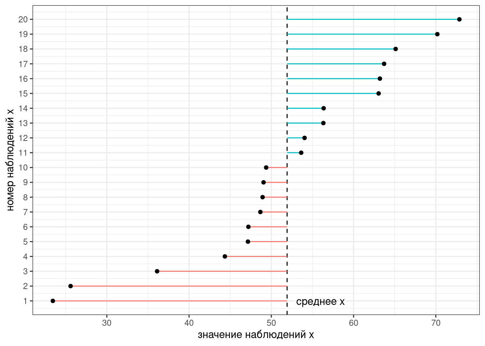
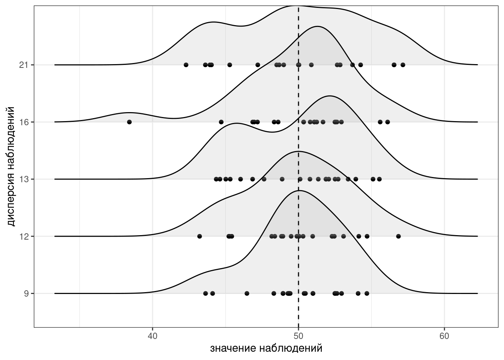
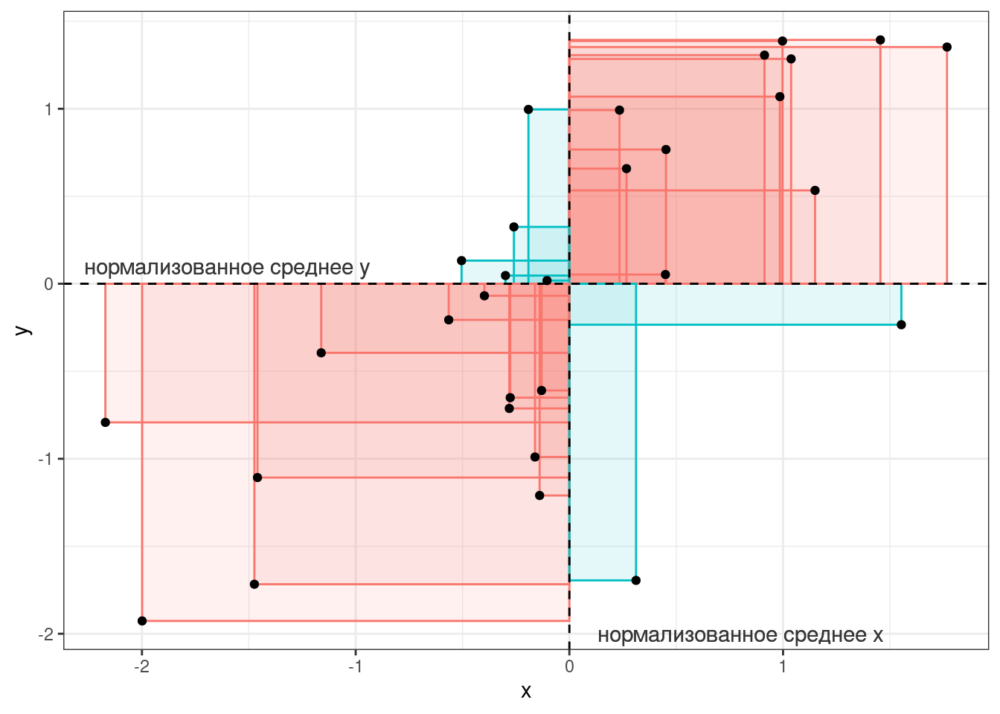
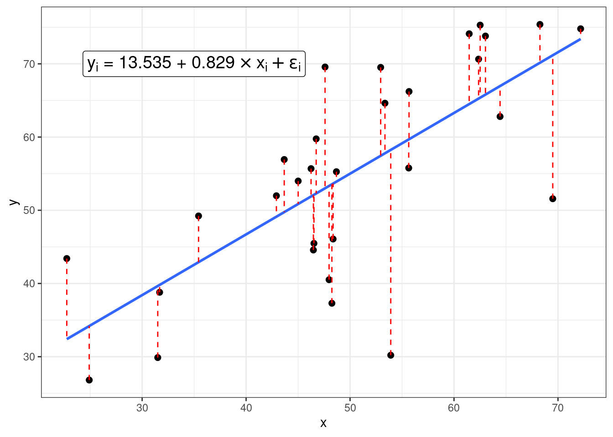
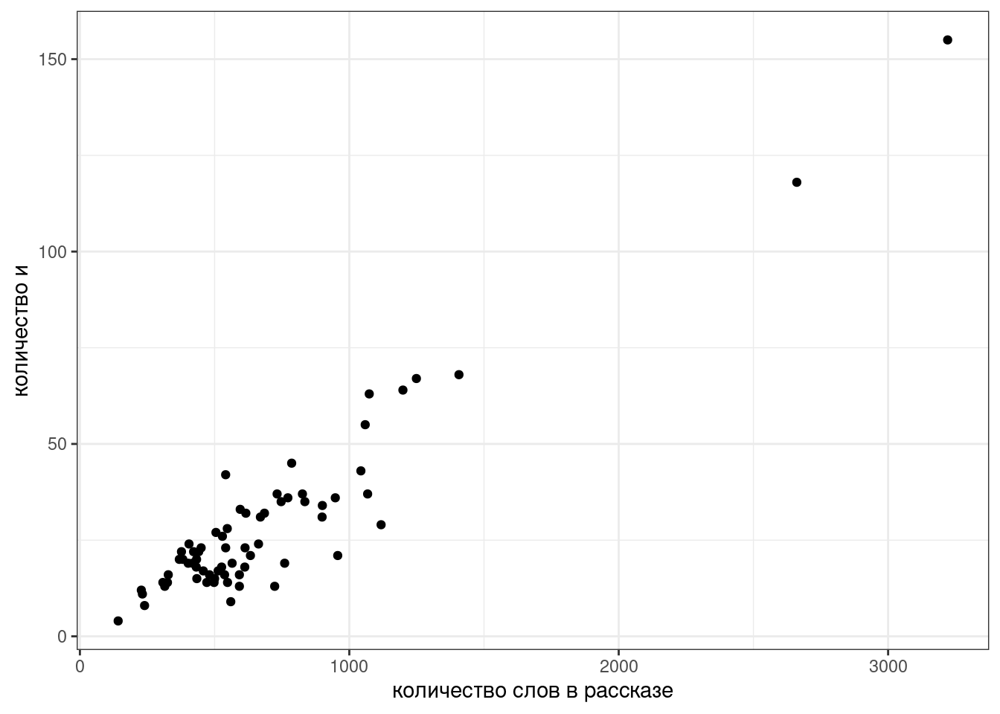
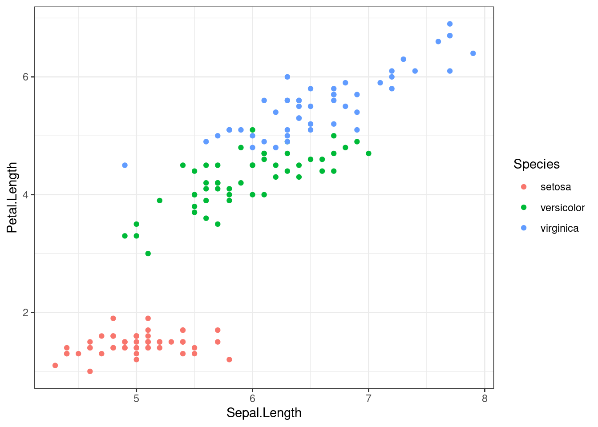
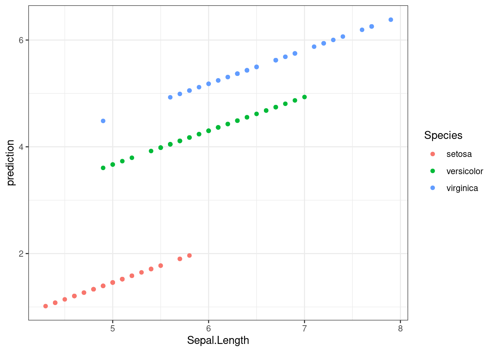
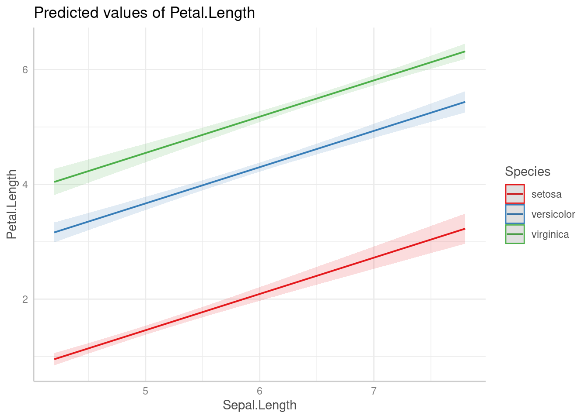
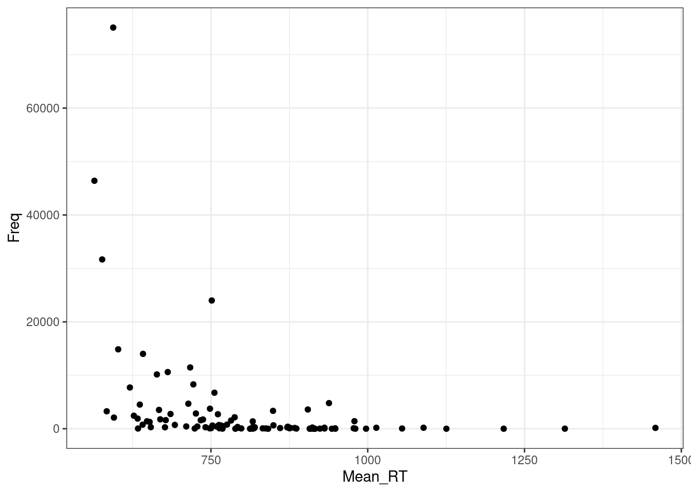
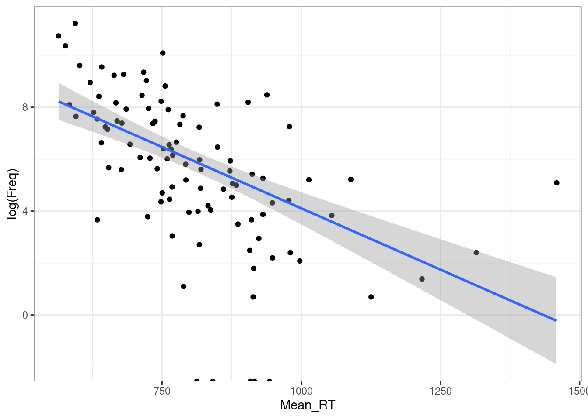

10 Ограничения на применение регрессии
library(tidyverse)10.1 Дисперсия и стандартное отклонение
Дисперсия — мера разброса значений наблюдений относительно среднего.
\[\sigma^2_X = \frac{\sum_{i = 1}^n(x_i - \bar{x})^2}{n - 1},\]
где
- \(x_1, ..., x_n\) — наблюдения;
- \(\bar{x}\) — среднее всех наблюдений;
- \(X\) — вектор всех наблюдений;
- \(n\) — количество наблюдений.
Представим, что у нас есть следующие данные:
Тогда дисперсия — это сумма квадратов расстояний от каждой точки до среднего выборки (пунктирная линия) разделенное на количество наблюдений - 1 (по духу эта мера — обычное среднее, но если вас инетересует разница смещенной и несмещенной оценки дисперсии, см. видео).

Для того чтобы было понятнее, что такое дисперсия, давайте рассмотрим несколько расспределений с одним и тем же средним, но разными дисперсиями:

В R дисперсию можно посчитать при помощи функции var()2.
set.seed(42)
x <- rnorm(20, mean = 50, sd = 10)
var(x)[1] 172.2993Проверим, что функция выдает то же, что мы записали в формуле.
var(x) == sum((x - mean(x))^2)/(length(x)-1)[1] TRUEТак как дисперсия является квадратом отклонения, то часто вместо нее используют более интерпретируемое стандартное отклонение \(\sigma\) — корень из дисперсии. В R ее можно посчитать при помощи функции sd():
sd(x)[1] 13.12628sd(x) == sqrt(var(x))[1] TRUE10.2 Ковариация
Ковариация — эта мера ассоциации двух переменных.
\[cov(X, Y) = \frac{\sum_{i = 1}^n(x_i - \bar{x})(y_i-\bar{y})}{n - 1},\]
где
- \((x_1, y_1), ..., (x_n, y_n)\) — пары наблюдений;
- \(\bar{x}, \bar{y}\) — средние наблюдений;
- \(X, Y\) — векторы всех наблюдений;
- \(n\) — количество наблюдений.
Представим, что у нас есть следующие данные:

Тогда, согласно формуле, для каждой точки вычисляется следующая площадь (пуктирными линиями обозначены средние):

Если значения \(x_i\) и \(y_i\) какой-то точки либо оба больше, либо оба меньше средних \(\bar{x}\) и \(\bar{y}\), то получившееся произведение будет иметь знак +, если же наоборот — знак -. На графике это показано цветом.

Таким образом, если много красных прямоугольников, то значение суммы будет положительное и обозначать положительную связь (чем больше \(x\), тем больше \(y\)), а если будет много синий прямоугольников, то значение суммы отрицательное и обозначать положительную связь (чем больше \(x\), тем меньше \(y\)). Непосредственно значение ковариации не очень информативно, так как может достаточно сильно варьироваться от датасета к датасету.
В R ковариацию можно посчитать при помощи функции cov().
set.seed(42)
x <- rnorm(10, mean = 50, sd = 10)
y <- x + rnorm(10, sd = 10)
cov(x, y)[1] 18.72204cov(x, -y*2)[1] -37.44407Как видно, простое умножение на два удвоило значение ковариации, что показывает, что непосредственно ковариацию использовать для сравнения разных датасетов не стоит.
Проверим, что функция выдает то же, что мы записали в формуле.
cov(x, y) == sum((x-mean(x))*(y - mean(y)))/(length(x)-1)[1] TRUE10.3 Корреляция
Корреляция — это мера ассоциации/связи двух числовых переменных. Помните, что бытовое применение этого термина к категориальным переменным (например, корреляция цвета глаз и успеваемость на занятиях по R) не имеет смысла с точки зрения статистики.
10.3.1 Корреляция Пирсона
Коэффициент корреляции Пирсона — базовый коэффициент ассоциации переменных, однако стоит помнить, что он дает неправильную оценку, если связь между переменными нелинейна.
\[\rho_{X,Y} = \frac{cov(X, Y)}{\sigma_X\times\sigma_Y} = \frac{1}{n-1}\times\sum_{i = 1}^n\left(\frac{x_i-\bar{x}}{\sigma_X}\times\frac{y_i-\bar{y}}{\sigma_Y}\right),\]
где
- \((x_1, y_1), ..., (x_n, y_n)\) — пары наблюдений;
- \(\bar{x}, \bar{y}\) — средние наблюдений;
- \(X, Y\) — векторы всех наблюдений;
- \(n\) — количество наблюдений.
Последнее уравнение показывает, что коэффициент корреляции Пирсона можно представить как среднее (с поправкой, поэтому \(n-1\), а не \(n\)) произведение \(z\)-нормализованных значений двух переменных.

Эта нормализация приводит к тому, что
- значения корреляции имеют те же свойства знака коэффициента что и ковариация:
- если коэффициент положительный (т. е. много красных прямоугольников) — связь между переменными положительная (чем больше \(x\), тем больше \(y\)),
- если коэффициент отрицательный (т. е. много синих прямоугольников) — связь между переменными отрицательная (чем больше \(x\), тем меньше \(y\));
- значение корреляции имееет независимое от типа данных интеретация:
- если модуль коэффициента близок к 1 или ему равен — связь между переменными сильная,
- если модуль коэффициента близок к 0 или ему равен — связь между переменными слабая.
Для того чтобы было понятнее, что такое корреляция, давайте рассмотрим несколько расспределений с разными значениями корреляции:

Как видно из этого графика, чем ближе модуль корреляции к 1, тем боллее компактно расположены точки друг к другу, чем ближе к 0, тем более рассеяны значения. Достаточно легко научиться приблизительно оценивать коэфициент корреляции на глаз, поиграв 2–5 минут в игру “Угадай корреляцию” здесь или здесь.
В R коэффициент корреляции Пирсона можно посчитать при помощи функции cor().
set.seed(42)
x <- rnorm(15, mean = 50, sd = 10)
y <- x + rnorm(15, sd = 10)
cor(x, y)[1] 0.6659041Проверим, что функция выдает то же, что мы записали в формуле.
cor(x, y) == cov(x, y)/(sd(x)*sd(y))[1] TRUEcor(x, y) == sum(scale(x)*scale(y))/(length(x)-1)[1] TRUE10.4 Основы регрессионного анализа
Когда мы пытаемся научиться предсказывать данные одной переменной \(Y\) при помощи другой переменной \(X\), мы получаем формулу:
\[y_i = \hat\beta_0 + \hat\beta_1 \times x_i + \epsilon_i,\] где
- \(x_i\) — \(i\)-ый элемент вектора значений \(X\);
- \(y_i\) — \(i\)-ый элемент вектора значений \(Y\);
- \(\hat\beta_0\) — оценка случайного члена (intercept);
- \(\hat\beta_1\) — оценка углового коэффициента (slope);
- \(\epsilon_i\) — \(i\)-ый остаток, разница между оценкой модели (\(\hat\beta_0 + \hat\beta_1 \times x_i\)) и реальным значением \(y_i\); весь вектор остатков иногда называют случайным шумом (на графике выделены красным).
Причем, иногда мы можем один или другой параметр считать равным нулю.
Определите по графику формулу синей прямой.

Задача регрессии — оценить параметры \(\hat\beta_0\) и \(\hat\beta_1\), если нам известны все значения \(x_i\) и \(y_i\) и мы пытаемся минимизировать значния \(\epsilon_i\). В данном конкретном случае, задачу можно решить аналитически и получить следующие формулы:
\[\hat\beta_1 = \frac{(\sum_{i=1}^n x_i\times y_i)-n\times\bar x \times \bar y}{\sum_{i = 1}^n(x_i-\bar x)^2}\]
\[\hat\beta_0 = \bar y - \hat\beta_1\times\bar x\]
При этом, вне зависимости от статистической школы, у регрессии есть свои ограничения на применение:
- линейность связи между \(x\) и \(y\);
- нормальность распределение остатков \(\epsilon_i\);
- гомоскидастичность — равномерность распределения остатков на всем протяжении \(x\);
- независимость переменных;
- независимость наблюдений друг от друга.
10.4.1 Первая регрессия
Давайте попробуем смоделировать количество слов и в рассказах М. Зощенко в зависимости от длины рассказа:
zo <- read_tsv("https://github.com/agricolamz/DS_for_DH/raw/master/data/tidy_zoshenko.csv")
zo %>%
filter(word == "и") %>%
distinct() %>%
ggplot(aes(n_words, n))+
geom_point()+
labs(x = "количество слов в рассказе",
y = "количество и")
Мы видим, несколько одиночных точек, давайте избавимся от них и добавим регрессионную линию при помощи функции geom_smooth():
zo %>%
filter(word == "и",
n_words < 1500) %>%
distinct() ->
zo_filtered
zo_filtered %>%
ggplot(aes(n_words, n))+
geom_point()+
geom_smooth(method = "lm", se = FALSE)+
labs(x = "количество слов в рассказе",
y = "количество и")
Чтобы получить формулу этой линии нужно запустить функцию, которая оценивает линейную регрессию:
fit <- lm(n~n_words, data = zo_filtered)
fit
Call:
lm(formula = n ~ n_words, data = zo_filtered)
Coefficients:
(Intercept) n_words
-1.47184 0.04405 Вот мы и получили коэффициенты, теперь мы видим, что наша модель считает следующее:
\[n = -1.47184 + 0.04405 \times n\_words\]
Более подробную информцию можно посмотреть, если запустить модель в функцию summary():
summary(fit)
Call:
lm(formula = n ~ n_words, data = zo_filtered)
Residuals:
Min 1Q Median 3Q Max
-19.6830 -4.3835 0.8986 4.6486 19.6413
Coefficients:
Estimate Std. Error t value Pr(>|t|)
(Intercept) -1.471840 2.467149 -0.597 0.553
n_words 0.044049 0.003666 12.015 <0.0000000000000002 ***
---
Signif. codes: 0 '***' 0.001 '**' 0.01 '*' 0.05 '.' 0.1 ' ' 1
Residual standard error: 7.945 on 64 degrees of freedom
Multiple R-squared: 0.6928, Adjusted R-squared: 0.688
F-statistic: 144.4 on 1 and 64 DF, p-value: < 0.00000000000000022В разделе Coefficients содержится информацию про наши коэффициенты:
Estimate– полученная оценка коэффициентов;Std. Error– стандартная ошибка среднего;t value– \(t\)-статистика, полученная при проведении одновыборочного \(t\)-теста, сравнивающего данный коэфициент с 0;Pr(>|t|)– полученное \(p\)-значение;Multiple R-squaredиAdjusted R-squared— одна из оценок модели, показывает связь между переменными. Без поправок совпадает с квадратом коэффициента корреляции Пирсона:
cor(zo_filtered$n_words, zo_filtered$n)^2[1] 0.6928376F-statistic— \(F\)-статистика полученная при проведении теста, проверяющего, не являются ли хотя бы один из коэффицинтов статистически значимо отличается от нуля. Совпадает с результатами дисперсионного анализа (ANOVA).
Теперь мы можем даже предсказывать значения, которые мы еще не видели. Например, сколько будет и в рассказе Зощенко длиной 1000 слов?

predict(fit, tibble(n_words = 1000)) 1
42.57715 10.4.2 Категориальные переменные
Что если мы хотим включить в наш анализ категориальные переменные? Давайте рассмотрим простой пример с рассказами Чехова и Зощенко, которые мы рассматривали в прошлом разделе. Мы будем анализировать логарифм доли слов деньги:
chekhov <- read_tsv("https://github.com/agricolamz/DS_for_DH/raw/master/data/tidy_chekhov.tsv")
zoshenko <- read_tsv("https://github.com/agricolamz/DS_for_DH/raw/master/data/tidy_zoshenko.csv")
chekhov$author <- "Чехов"
zoshenko$author <- "Зощенко"
chekhov %>%
bind_rows(zoshenko) %>%
filter(str_detect(word, "деньг")) %>%
group_by(author, titles, n_words) %>%
summarise(n = sum(n)) %>%
mutate(log_ratio = log(n/n_words)) ->
checkov_zoshenkoВизуализация выглядит так:

Красной точкой обозначены средние значения, так что мы видим, что между двумя писателями есть разница, но является ли она статистически значимой? В прошлом разделе, мы рассмотрели, что в таком случае можно сделать t-test:
t.test(log_ratio~author,
data = checkov_zoshenko,
var.equal =TRUE) # здесь я мухлюю, отключая поправку Уэлча
Two Sample t-test
data: log_ratio by author
t = 5.6871, df = 125, p-value = 0.00000008665
alternative hypothesis: true difference in means between group Зощенко and group Чехов is not equal to 0
95 percent confidence interval:
0.8606107 1.7793181
sample estimates:
mean in group Зощенко mean in group Чехов
-5.021262 -6.341226 Разница между группами является статистически значимой (t(125) = 5.6871, p-value = 8.665e-08).
Для того, чтобы запустить регрессию на категориальных данных категориальная переменная автоматически разбивается на группу бинарных dummy-переменных:
tibble(author = c("Чехов", "Зощенко"),
dummy_chekhov = c(1, 0),
dummy_zoshenko = c(0, 1))Дальше для регрессионного анализа выкидывают одну из переменных, так как иначе модель не сойдется (dummy-переменных всегда n-1, где n — количество категорий в переменной).
tibble(author = c("Чехов", "Зощенко"),
dummy_chekhov = c(1, 0))Если переменная dummy_chekhov принимает значение 1, значит речь о рассказе Чехова, а если принимает значение 0, то о рассказе Зощенко. Если вставить нашу переменную в регрессионную формулу получится следующее:
\[y_i = \hat\beta_0 + \hat\beta_1 \times \text{dummy_chekhov} + \epsilon_i,\]
Так как dummy_chekhov принимает либо значение 1, либо значение 0, то получается, что модель предсказывает лишь два значения:
\[y_i = \left\{\begin{array}{ll}\hat\beta_0 + \hat\beta_1 \times 1 + \epsilon_i = \hat\beta_0 + \hat\beta_1 + \epsilon_i\text{, если рассказ Чехова}\\ \hat\beta_0 + \hat\beta_1 \times 0 + \epsilon_i = \hat\beta_0 + \epsilon_i\text{, если рассказ Зощенко} \end{array}\right.\]
Таким образом, получается, что свободный член \(\beta_0\) и угловой коэффициент \(\beta_1\) в регресси с категориальной переменной получает другую интерпретацию. Одно из значений переменной кодируется при помощи \(\beta_0\), а сумма коэффициентов \(\beta_0+\beta_1\) дают другое значение переменной. Так что \(\beta_1\) — это разница между оценками двух значений переменной.
Давайте теперь запустим регрессию на этих же данных:
fit2 <- lm(log_ratio~author, data = checkov_zoshenko)
summary(fit2)
Call:
lm(formula = log_ratio ~ author, data = checkov_zoshenko)
Residuals:
Min 1Q Median 3Q Max
-2.8652 -0.6105 -0.0607 0.6546 3.2398
Coefficients:
Estimate Std. Error t value Pr(>|t|)
(Intercept) -5.0213 0.2120 -23.680 < 0.0000000000000002 ***
authorЧехов -1.3200 0.2321 -5.687 0.0000000867 ***
---
Signif. codes: 0 '***' 0.001 '**' 0.01 '*' 0.05 '.' 0.1 ' ' 1
Residual standard error: 0.9717 on 125 degrees of freedom
Multiple R-squared: 0.2056, Adjusted R-squared: 0.1992
F-statistic: 32.34 on 1 and 125 DF, p-value: 0.00000008665Во-первых стоит обратить внимание на то, что R сам преобразовал нашу категориальную переменную в dummy-переменную authorЧехов. Во-вторых, можно заметить, что значения t-статистики и p-value совпадают с результатами полученными нами в t-тесте выше. Статистическти значимый коэффициент при аргументе authorЧехов следует интерпретировать как разницу средних между логарифмом долей в рассказах Чехова и Зощенко.
10.4.3 Множественная регрессия
Множественная регрессия позволяет проанализировать связь между зависимой и несколькими зависимыми переменными. Формула множественной регрессии не сильно отличается от формулы обычной линейной регрессии:
\[y_i = \hat\beta_0 + \hat\beta_1 \times x_{1i}+ \dots+ \hat\beta_n \times x_{ni} + \epsilon_i,\]
- \(x_{ki}\) — \(i\)-ый элемент векторов значений \(X_1, \dots, X_n\);
- \(y_i\) — \(i\)-ый элемент вектора значений \(Y\);
- \(\hat\beta_0\) — оценка случайного члена (intercept);
- \(\hat\beta_k\) — коэфциент при переменной \(X_{k}\);
- \(\epsilon_i\) — \(i\)-ый остаток, разница между оценкой модели (\(\hat\beta_0 + \hat\beta_1 \times x_i\)) и реальным значением \(y_i\); весь вектор остатков иногда называют случайным шумом.
В такой регресии предикторы могут быть как числовыми, так и категориальными (со всеми вытекающими последствиями, которые мы обсудили в предудщем разделе). Такую регрессию чаще всего сложно визуализировать, так как в одну регрессионную линию вкладываются сразу несколько переменных.
Попробуем предсказать длину лепестка на основе длины чашелистик и вида ириса:
iris %>%
ggplot(aes(Sepal.Length, Petal.Length, color = Species))+
geom_point()
Запустим регрессию:
fit3 <- lm(Petal.Length ~ Sepal.Length+ Species, data = iris)
summary(fit3)
Call:
lm(formula = Petal.Length ~ Sepal.Length + Species, data = iris)
Residuals:
Min 1Q Median 3Q Max
-0.76390 -0.17875 0.00716 0.17461 0.79954
Coefficients:
Estimate Std. Error t value Pr(>|t|)
(Intercept) -1.70234 0.23013 -7.397 0.0000000000101 ***
Sepal.Length 0.63211 0.04527 13.962 < 0.0000000000000002 ***
Speciesversicolor 2.21014 0.07047 31.362 < 0.0000000000000002 ***
Speciesvirginica 3.09000 0.09123 33.870 < 0.0000000000000002 ***
---
Signif. codes: 0 '***' 0.001 '**' 0.01 '*' 0.05 '.' 0.1 ' ' 1
Residual standard error: 0.2826 on 146 degrees of freedom
Multiple R-squared: 0.9749, Adjusted R-squared: 0.9744
F-statistic: 1890 on 3 and 146 DF, p-value: < 0.00000000000000022Все предикторы статистически значимы. Давайте посмотрим предсказания модели для всех наблюдений:
iris %>%
mutate(prediction = predict(fit3)) %>%
ggplot(aes(Sepal.Length, prediction, color = Species))+
geom_point()
Всегда имеет смысл визуализировать, что нам говорит наша модель. Если использовать пакет ggeffects (или предшествовавший ему пакет effects), это можно сделать не сильно задумываясь, как это делать:
library(ggeffects)
plot(ggpredict(fit3, terms = c("Sepal.Length", "Species")))
Как видно из графиков, наша модель имеет одинаковые угловые коэффициенты (slope) для каждого из видов ириса и разные свободные члены (intercept).
summary(fit3)
Call:
lm(formula = Petal.Length ~ Sepal.Length + Species, data = iris)
Residuals:
Min 1Q Median 3Q Max
-0.76390 -0.17875 0.00716 0.17461 0.79954
Coefficients:
Estimate Std. Error t value Pr(>|t|)
(Intercept) -1.70234 0.23013 -7.397 0.0000000000101 ***
Sepal.Length 0.63211 0.04527 13.962 < 0.0000000000000002 ***
Speciesversicolor 2.21014 0.07047 31.362 < 0.0000000000000002 ***
Speciesvirginica 3.09000 0.09123 33.870 < 0.0000000000000002 ***
---
Signif. codes: 0 '***' 0.001 '**' 0.01 '*' 0.05 '.' 0.1 ' ' 1
Residual standard error: 0.2826 on 146 degrees of freedom
Multiple R-squared: 0.9749, Adjusted R-squared: 0.9744
F-statistic: 1890 on 3 and 146 DF, p-value: < 0.00000000000000022\[y_i = \left\{\begin{array}{ll} -1.70234 + 0.63211 \times \text{Sepal.Length} + \epsilon_i\text{, если вид setosa}\\ -1.70234 + 2.2101 + 0.63211 \times \text{Sepal.Length} + \epsilon_i\text{, если вид versicolor} \\ -1.70234 + 3.09 + 0.63211 \times \text{Sepal.Length} + \epsilon_i\text{, если вид virginica} \end{array}\right.\]
10.5 Нелинейность взаимосвязи
Давайте восползуемся данными из пакета Rling Натальи Левшиной. В датасете 100 произвольно выбранных слов из проекта English Lexicon Project (Balota et al. 2007), их длина, среднее время реакции и частота в корпусе.
ldt <- read_csv("https://goo.gl/ToxfU6")
ldtДавайте посмотрим на простой график:
ldt %>%
ggplot(aes(Mean_RT, Freq))+
geom_point()+
theme_bw()
Регрессия на таких данных будет супер неиформативна:
ldt %>%
ggplot(aes(Mean_RT, Freq))+
geom_point()+
geom_smooth(method = "lm")+
theme_bw()
m1 <- summary(lm(Mean_RT~Freq, data = ldt))
m1
Call:
lm(formula = Mean_RT ~ Freq, data = ldt)
Residuals:
Min 1Q Median 3Q Max
-224.93 -85.42 -30.52 81.90 632.66
Coefficients:
Estimate Std. Error t value Pr(>|t|)
(Intercept) 826.998242 15.229783 54.301 < 0.0000000000000002 ***
Freq -0.005595 0.001486 -3.765 0.000284 ***
---
Signif. codes: 0 '***' 0.001 '**' 0.01 '*' 0.05 '.' 0.1 ' ' 1
Residual standard error: 143.9 on 98 degrees of freedom
Multiple R-squared: 0.1264, Adjusted R-squared: 0.1174
F-statistic: 14.17 on 1 and 98 DF, p-value: 0.000284310.5.1 Логарифмирование
ldt %>%
ggplot(aes(Mean_RT, log(Freq)))+
geom_point()+
geom_smooth(method = "lm")+
theme_bw()
ldt %>%
ggplot(aes(Mean_RT, log(Freq+1)))+
geom_point()+
geom_smooth(method = "lm")+
theme_bw()
m2 <- summary(lm(Mean_RT~log(Freq+1), data = ldt))
m2
Call:
lm(formula = Mean_RT ~ log(Freq + 1), data = ldt)
Residuals:
Min 1Q Median 3Q Max
-242.36 -76.66 -17.49 48.64 630.49
Coefficients:
Estimate Std. Error t value Pr(>|t|)
(Intercept) 1001.60 29.79 33.627 < 0.0000000000000002 ***
log(Freq + 1) -34.03 4.76 -7.149 0.000000000158 ***
---
Signif. codes: 0 '***' 0.001 '**' 0.01 '*' 0.05 '.' 0.1 ' ' 1
Residual standard error: 124.8 on 98 degrees of freedom
Multiple R-squared: 0.3428, Adjusted R-squared: 0.3361
F-statistic: 51.11 on 1 and 98 DF, p-value: 0.0000000001576m1$adj.r.squared[1] 0.1174405m2$adj.r.squared[1] 0.336078Отлогорифмировать можно и другую переменную.
ldt %>%
ggplot(aes(log(Mean_RT), log(Freq + 1)))+
geom_point()+
geom_smooth(method = "lm")+
theme_bw()m3 <- summary(lm(log(Mean_RT)~log(Freq+1), data = ldt))
m1$adj.r.squared[1] 0.1174405m2$adj.r.squared[1] 0.336078m3$adj.r.squared[1] 0.3838649Как интерпретировать полученную регрессию с двумя отлогорифмированными значениями?
В обычной линейной регресии мы узнаем отношения между \(x\) и \(y\): \[y_i = \beta_0+\beta_1\times x_i\]
Как изменится \(y_j\), если мы увеличем \(x_i + 1 = x_j\)? \[y_j = \beta_0+\beta_1\times x_j\]
\[y_j - y_i = \beta_0+\beta_1\times x_j - (\beta_0+\beta_1\times x_i) = \beta_1(x_j - x_i)\]
Т. е. \(y\) увеличится на \(\beta_1\) , если \(x\) увеличится на 1. Что же будет с логарифмированными переменными? Как изменится \(y_j\), если мы увеличем \(x_i + 1 = x_j\)?
\[\log(y_j) - \log(y_i) = \beta_1\times (\log(x_j) - \log(x_i))\]
\[\log\left(\frac{y_j}{y_i}\right) = \beta_1\times \log\left(\frac{x_j}{x_i}\right) = \log\left(\left(\frac{x_j}{x_i}\right) ^ {\beta_1}\right)\]
\[\frac{y_j}{y_i}= \left(\frac{x_j}{x_i}\right) ^ {\beta_1}\]
Т. е. \(y\) увеличится на \(\beta_1\) процентов, если \(x\) увеличится на 1 процент.
Логарифмирование — не единственный вид траснформации:
- трансформация Тьюки
shiny::runGitHub("agricolamz/tukey_transform")- трансформация Бокса — Кокса
- …
В датасет собрана частотность разных лемм на основании корпуса НКРЯ (Ляшевская and Шаров 2009) (в датасете только значения больше ipm > 10). Известно, что частотность слова связана с рангом слова (см. закон Ципфа). Постройте переменную ранга и визуализируйте связь ранга и логорифма частотности с разбивкой по частям речи. Какие части речи так и не приобрели после трансформации “приемлимую” линейную форму? (я насчитал 5 таких)
10.6 Нормальность распределение остатков
Линейная регрессия предполагает нормальность распределения остатков. Когда связь не линейна, то остатки тоже будут распределены не нормально.
Можно смотреть на первый график используя функцию plot(m1) — график остатков. Интерпретаций этого графика достаточно много (см. статью про это).
Можно смотреть на qqplot:
tibble(res = m1$residuals) %>%
ggplot(aes(res))+
geom_histogram(aes(y = ..density..))+
stat_function(fun = dnorm, args = list(mean = 0, sd = sd(m1$residuals)), color = "red")
qqnorm(m1$residuals)
qqline(m1$residuals)
tibble(res = m2$residuals) %>%
ggplot(aes(res))+
geom_histogram(aes(y = ..density..))+
stat_function(fun = dnorm, args = list(mean = 0, sd = sd(m2$residuals)), color = "red")
qqnorm(m2$residuals)
qqline(m2$residuals)tibble(res = m3$residuals) %>%
ggplot(aes(res))+
geom_histogram(aes(y = ..density..))+
stat_function(fun = dnorm, args = list(mean = 0, sd = sd(m3$residuals)), color = "red")qqnorm(m3$residuals)
qqline(m3$residuals)
10.7 Гетероскидастичность
Распределение остатков непостоянно (т.е. не гомоскидастичны):
ldt %>%
ggplot(aes(Mean_RT, Freq))+
geom_point()+
theme_bw()
Тоже решается преобазованием данных.
10.8 Мультиколлинеарность
Линейная связь между некоторыми предикторами в модели.
- корреляционная матрица
- VIF (Variance inflation factor),
car::vif()- VIF = 1 (Not correlated)
- 1 < VIF < 5 (Moderately correlated)
- VIF >=5 (Highly correlated)
10.9 Независимость наблюдений
Наблюдения должны быть независимы. В ином случае нужно использовать модель со смешанными эффектами.
10.9.1 Линейная модель со смешанными эффектами
В качестве примера мы попробуем поиграть с законом Хердана-Хипса, описывающий взаимосвязь количества уникальных слов в тексте в зависимости от длины текста. В датасете собраны некоторые корпуса Universal Dependencies (Zeman et al. 2020) и некоторые числа, посчитанные на их основании:
ud <- read_csv("https://raw.githubusercontent.com/agricolamz/2021_da4l/master/data/ud_corpora.csv")
ud %>%
ggplot(aes(n_words, n_tokens))+
geom_point()+
facet_wrap(~corpus, scale = "free")+
geom_smooth(method = "lm", se = FALSE)+
labs(x = "количество слов",
y = "количество уникальных слов",
caption = "данные корпусов Universal Dependencies")
Связь между переменными безусловно линейная, однако в разных корпусах представлена разная перспектива: для каких-то корпусов, видимо, тексты специально нарезались, так что тексты таких корпусов содержат от 30-40 до 50-80 слов, а какие-то оставались не тронутыми. Чтобы показать, что связь есть, нельзя просто “слить” все наблюдения в один котел (см. парадокс Симпсона), так как это нарушит предположение регрессии о независимости наблюдений. Мы не можем включить переменную corpus в качестве dummy-переменной: тогда один из корпусов попадет в интерсепт (станет своего рода базовым уровенем), а остальные будут от него отсчитываться. К тому же не очень понятно, как работать с новыми данными из других корпусов: ведь мы хотим предсказывать значения обобщенно, вне зависимости от корпуса.
При моделировании при помощи моделей со случайными эффектами различают:
- основные эффекты – это те связи, которые нас интересуют, независимые переменные (количество слов, количество уникальных слов);
- случайные эффекты – это те переменные, которые создают группировку в данных (корпус).
В результате моделирования появляется обобщенная модель, которая игнорирует группировку, а потом для каждого значения случайного эффекта генерируется своя регрессия, отсчитывая от обобщенной модели как от базового уровня.
Рассмотрим простейший случай:
library(lme4)
library(lmerTest)
fit1 <- lmer(n_tokens~n_words+(1|corpus), data = ud)
summary(fit1)Linear mixed model fit by REML. t-tests use Satterthwaite's method [
lmerModLmerTest]
Formula: n_tokens ~ n_words + (1 | corpus)
Data: ud
REML criterion at convergence: 10321.5
Scaled residuals:
Min 1Q Median 3Q Max
-7.5271 -0.4947 0.0354 0.5282 8.6350
Random effects:
Groups Name Variance Std.Dev.
corpus (Intercept) 240.608 15.512
Residual 8.844 2.974
Number of obs: 2046, groups: corpus, 6
Fixed effects:
Estimate Std. Error df t value Pr(>|t|)
(Intercept) -4.527634 6.353147 4.958748 -0.713 0.508
n_words 0.827933 0.004418 1992.686553 187.415 <0.0000000000000002 ***
---
Signif. codes: 0 '***' 0.001 '**' 0.01 '*' 0.05 '.' 0.1 ' ' 1
Correlation of Fixed Effects:
(Intr)
n_words -0.079ud %>%
mutate(predicted = predict(fit1)) %>%
ggplot(aes(n_words, n_tokens))+
geom_point()+
facet_wrap(~corpus, scale = "free")+
geom_line(aes(y = predicted), color = "red") +
labs(x = "количество слов",
y = "количество уникальных слов",
caption = "данные корпусов Universal Dependencies")
Можно посмотреть на предсказания модели (основные эффекты):
library(ggeffects)
ggeffect(fit1) %>%
plot()$n_words
Визуализируйте полученные модели при помощи функции
plot(). Какие ограничения на применение линейной регрессии
нарушается в наших моделях?
plot(fit1)В данном случае мы предполагаем, что случайный эффект имеет случайный свободный член. Т.е. все получающиеся линии параллельны, так как имеют общий угловой коэффициент. Можно допустить большую свободу и сделать так, чтобы в случайном эффекте были не только интерсепт, но и свободный член:
fit2 <- lmer(n_tokens~n_words+(1+n_words|corpus), data = ud)
summary(fit2)Linear mixed model fit by REML. t-tests use Satterthwaite's method [
lmerModLmerTest]
Formula: n_tokens ~ n_words + (1 + n_words | corpus)
Data: ud
REML criterion at convergence: 10275.2
Scaled residuals:
Min 1Q Median 3Q Max
-7.8337 -0.5003 0.0293 0.5172 8.8405
Random effects:
Groups Name Variance Std.Dev. Corr
corpus (Intercept) 4.465751 2.11323
n_words 0.009532 0.09763 -1.00
Residual 8.693060 2.94840
Number of obs: 2046, groups: corpus, 6
Fixed effects:
Estimate Std. Error df t value Pr(>|t|)
(Intercept) 3.23103 0.88937 2.21775 3.633 0.0582 .
n_words 0.80323 0.04005 4.10414 20.056 0.0000299 ***
---
Signif. codes: 0 '***' 0.001 '**' 0.01 '*' 0.05 '.' 0.1 ' ' 1
Correlation of Fixed Effects:
(Intr)
n_words -0.988
optimizer (nloptwrap) convergence code: 0 (OK)
boundary (singular) fit: see help('isSingular')ud %>%
mutate(predicted = predict(fit2)) %>%
ggplot(aes(n_words, n_tokens))+
geom_point()+
facet_wrap(~corpus, scale = "free")+
geom_line(aes(y = predicted), color = "red") +
labs(x = "количество слов",
y = "количество уникальных слов",
caption = "данные корпусов Universal Dependencies")
Можно посмотреть на предсказания модели (основные эффекты):
ggeffect(fit2) %>%
plot()$n_wordsНарушения все те же:
plot(fit2)При желании мы можем также построить модель, в которой в случайном эффекте будет лишь угловой коэффициент, а свободный член будет фиксированным:
fit3 <- lmer(n_tokens~n_words+(0+n_words|corpus), data = ud)
summary(fit3)Linear mixed model fit by REML. t-tests use Satterthwaite's method [
lmerModLmerTest]
Formula: n_tokens ~ n_words + (0 + n_words | corpus)
Data: ud
REML criterion at convergence: 10280.9
Scaled residuals:
Min 1Q Median 3Q Max
-7.8107 -0.4933 0.0315 0.5227 8.8209
Random effects:
Groups Name Variance Std.Dev.
corpus n_words 0.004023 0.06343
Residual 8.717996 2.95263
Number of obs: 2046, groups: corpus, 6
Fixed effects:
Estimate Std. Error df t value Pr(>|t|)
(Intercept) 2.64805 0.21627 2043.59791 12.24 < 0.0000000000000002 ***
n_words 0.80427 0.02615 5.16230 30.76 0.000000477 ***
---
Signif. codes: 0 '***' 0.001 '**' 0.01 '*' 0.05 '.' 0.1 ' ' 1
Correlation of Fixed Effects:
(Intr)
n_words -0.132ud %>%
mutate(predicted = predict(fit3)) %>%
ggplot(aes(n_words, n_tokens))+
geom_point()+
facet_wrap(~corpus, scale = "free")+
geom_line(aes(y = predicted), color = "red") +
labs(x = "количество слов",
y = "количество уникальных слов",
caption = "данные корпусов Universal Dependencies")
Линии получились очень похожими, но разными:

Можно посмотреть на предсказания модели (основные эффекты):
ggeffect(fit3) %>%
plot()$n_wordsНарушения все те же:
plot(fit3)Сравним полученные модели:
anova(fit3, fit2, fit1)Постройте модель со случайными угловым коэффициентом и свободным членом, устранив проблему, которую вы заметили в прошлом задании.
Пользуясь знаниями из предыдущих заданий, смоделируйте связь количества слов и количества существительных. С какими проблемами вы столкнулись?
Ссылки на литературу
Как и в других функциях, вычисляющих описательную статистику (
mean(),median(),max(),min()и др.), функцияvar()(и все остальные функции, которые мы будем обсуждатьsd(),cov()) возвращаютNA, если в векторе есть пропущенные значения. Чтобы изменить это поведение, нужно добавить аргументna.rm = TRUE.↩︎